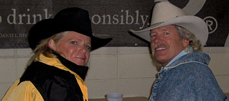

About Us
Hello Y’all! My name is Uma Jones, I’m the founder of Horse Sanctuary and current trainer on our ranch. My purpose in life is to protect and help rescue horses subjected to abuse or neglect. We believe that no horse should be turned away due to age or defects, that’s why I am looking for help. Sponsors and adoptees are welcomed as well as donations of any amount. Thank you for visiting our website. Sincerely, - Uma Jones
(Uma and Husband Jack)
Our story
Ten years ago, Uma Jones decided to buy 20 acres of land on a whim, she never imagined that those 20 acres would turn into a haven for rescue horses. It all started with Molly; a quarter horse subjected to horrible abuse at the hands of her previous owner. Uma discovered her on a ranch where she worked as a farrier. Upon examination, Uma realized that Molly needed medical help immediately. She was able to rescue Molly and this sparked interest in abused horses. This is how Horse Sanctuary was born.